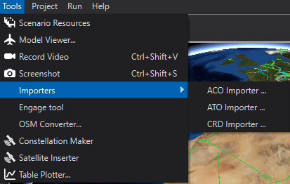

CRD Importer - Wizard¶
Overview¶
The Common Route Definition (CRD) Importer provides the function of extracting waypoint information from a valid, well-formed CRD file, and producing an AFSIM mission route file containing the equivalent information in a format that will directly support one or more platforms following the routes during a simulation. The CRD Importer operates in two modes, either as a stand-alone command line utility program, or as a plug-in module for the AFSIM Wizard simulation IDE. The results of both modes is identical, so for the purposes of this document, most of the discussion will explain the plug-in module operation. A short section will follow describing the format and options for the command line utility.
Quick Start¶
Once Wizard has been started, select the Tools ->Importers menu option (Figure 1), and then select the CRD Importer option from the menu. The main dialog box used for converting CRD files will appear, as shown in Figure 2.
Figure 1. Opening the CRD Importer Dialog from the Wizard Tools menu
The CRD Importer has several user entry options.
Source Files (Required entry) - The user adds files to this text list using the Add File/Folder buttons for input CRD files that are to be converted to AFSIM mission route files.
File Base Name (optional) - The user can specify a string that will be prefixed to the beginning of the each mission route file generated from the input files.
Directory (defaults to userYYYs Documents folder) - This folder specifies the folder into which the converter will place the generated AFSIM mission route files.
Lat/Lon Format (defaults to Decimal) - This setting allows the user to specify that the AFSIM route pointsYYY latitudes and longitudes will be in Decimal or DMS (degrees, minutes, seconds) format
Use “pause” command for Orbits - This settings control whether platforms using this route will pause for the duration of an orbit, or whether the platform will fly the specified track at the orbit location. Even if unchecked, a pause command may be used if the time given for an orbit does not allow for a full 360 degree turn.
GeoTolerance (defaults to 0.000001 degree) - This setting sets the value below which two coordinate latitudes or longitudes are considered equal. There should normally not be a reason to change this value. If points are defined very close together in the CRD path, it may rarely be desirable to generate fewer points in the AFSIM route. If successive points in a CRD path are different in latitude and longitude by less than this value, those points will not be included in the AFSIM generated route.
Generate Waypoints in Nested Transitions (checked by default) - CRD routes can have multiple levels of granularity, determined by the nesting level of the CRD Transition elements. By default the converter will generate a route including all levels of nesting, giving the most detailed route. If a less detailed route (fewer points) are desired, the user can uncheck this box, in which case, only the top level Transition elements will be used to generate the routes.
Create Platform Stubs - If enabled, a platform block will be written out after the route block with the use_route command specified so that the platform will fly to specified route. If the CRD file specified the CLOCK_TIME and CLOCK_DATE for the route, the creation_time command will be added so that the platform is instantiated at the correct time.
Include Debugging Information (unchecked by default) - If pressing the Import button does not result in the generation of any AFSIM mission route files, the user can check this box and reselect the Import button. This will generate a file named “crdlogfile.txt” in the user’s Documents folder. This file provides detailed information regarding which tags and tokens are successfully read from the CRD input files (which are XML files). If an input file has been corrupted, this file can be very helpful in fixing missing tags or typographical errors in the files. Unless the CRD files are hand edited, they should be valid, well-formed XML, and this option should be rarely needed.
- Print Alternate Coordinate Format in comments (unchecked by default) - If the user checks this option and
the Lat/Lon Format is Decimal, comments will be generated to show the DMS format coordinate equivalents for each way point.
the Lat/Lon Format is DMS, comments will be generated to show the Decimal format coordinate equivalents for each way point.
Figure 2. The CRD Importer Dialog.
Import Button - Selection of this button starts the conversion of the specified CRD input files consistent with the other options selected on this dialog box. (The button is enabled when at least one input file is specified.) When selected, a status dialog box will appear (Figure 3) that will show the status of the conversion from CRD files to AFSIM mission route files. The status line on this dialog box will originally show “Converting input files…”. When complete, the status will display” Conversion completed normally”. If the conversion does not complete normally, the user can select the “Cancel” button on the CRD Importer Status Dialog box. In this case, the status will change to “Conversion process canceled by user”. When the conversion is complete, a tree view of the input and associated output files is shown in the “AFSIM Route Files Generated” text box. In general the conversion will occur in a few seconds, unless the number of files is very large. If no AFSIM route files appear in the text box, it is likely that either one or more of the specified CRD input files is corrupted, or that a condition not currently handled by the CRD Importer has been encountered. In this case, use of the “Include debug information” option will be very helpful in either correcting the problem with the input file(s), or with resolving an issue with the CRD Importer.
Close Button - There is a close button on the status dialog and the main importer dialog, which will close the respective dialog box. If a conversion is still in progress, selecting the close button on the status dialog will also terminate the conversion process.
Figure 3. The status dialog for the CRD Importer.
Command Line CRD Importer Utility
The CRD Importer Utility is run using the program CrdImporterExec.exe. Figure 4 illustrates the command line options. This help message is displayed when the command line executable is run without options, or with the -h option. The options displayed correspond in general to similar options in the Wizard plugin CRD Importer Dialog:
-h or
--help - Displays the help message in Figure 4.-d or
--debug - Creates a crdlogfile.txt file in the users Documents folder to assist in debugging. Also inserts debugging comments in the generated AFSIM mission route files describing the XML source element references for each generated point-t or
--tolerance <double value> - Specifies the interval in decimal degrees that will result in two successive input file route points being judged as equal. If a point is considered equal to the previous point in the Path, it will not be included in the generated AFSIM route. This option defaults to 0.000001. In general, it should not be changed. When a less detailed route is desired (possibly for performance reasons) and considered adequate for simulation purposes, it may be adjusted.-r or
--recurseTransitions <true|false> - This specifies whether different levels of Transitions will be processed in the CRD files to simulate the different levels of granularity that they can provide. By default this is set to true, meaning all Transitions will be processed to generated the most detailed route contained in the input file. If set to false, only the top level Transitions will be used to generate the AFSIM route(s).-f or
--format <DECIMAL | DMS> - `` This options specifies the format of the points generated in the AFSIM mission route files.-o or
--outputfilebase <filename prefix string> - This option specifies a prefix to the names of the route files that AFSIM generates from the import process. The names of the generated AFSIM mission route files will be of the form <filename prefix string> _<mission_name>.txt.-odir <directory name> - specifies the name of an output directory where the generated AFSIM mission route files will be stored by the CRD importer program.
Figure 4. Running the Command Line CRD Importer Utility
Command Line Examples¶
CrdImporterExec.exe -r true -o BatchBase -f DMS DP_Test_Falcon_11.crd
The importer parses the input file DP_Test_Falcon_11.crd. It processes all levels of Transitions (-r true), creates all route points with degrees, minutes, seconds format (-f DMS), and prefixes the names of the files with the string BatchBase.
CrdImporterExec.exe -r false -o MissionQuebec -f DECIMAL DP_Test_Falcon_11.crd
The importer parses the input file DP_Test_Falcon_11.crd. It processes only the top level of Transitions (-r false), creates all route points with decimal format (-f DECIMAL), and prefixes the names of the files with the string MissionQuebec.
CrdImporterExec.exe -o DirectoryTest -odir afsimRoutes -f DECIMAL modifiedCrdFiles
The importer parses all .crd files in the folder modifiedCrdFiles. It processes all levels of Transitions, creates all route points with decimal format (-f DECIMAL), and prefixes the names of the files with the string DirectoryTest. It puts the generated AFSIM mission route files into the folder afsimRoutes.